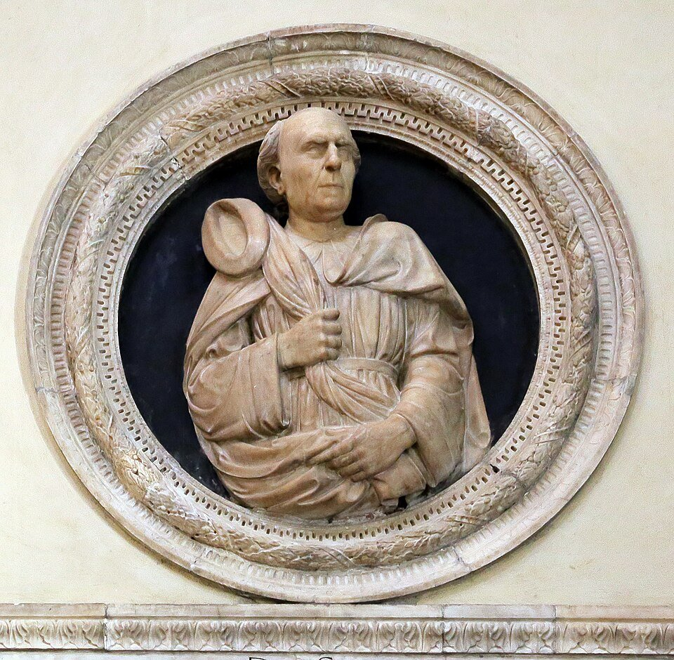
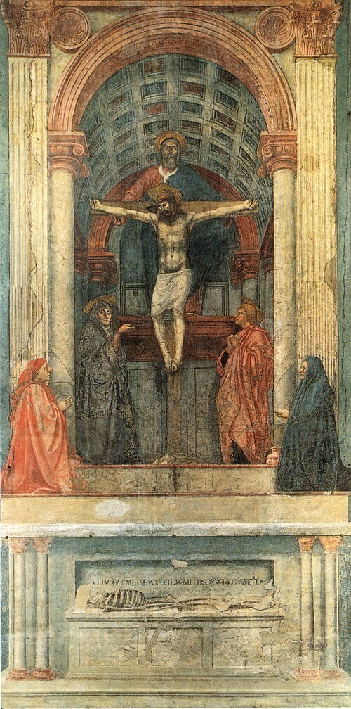
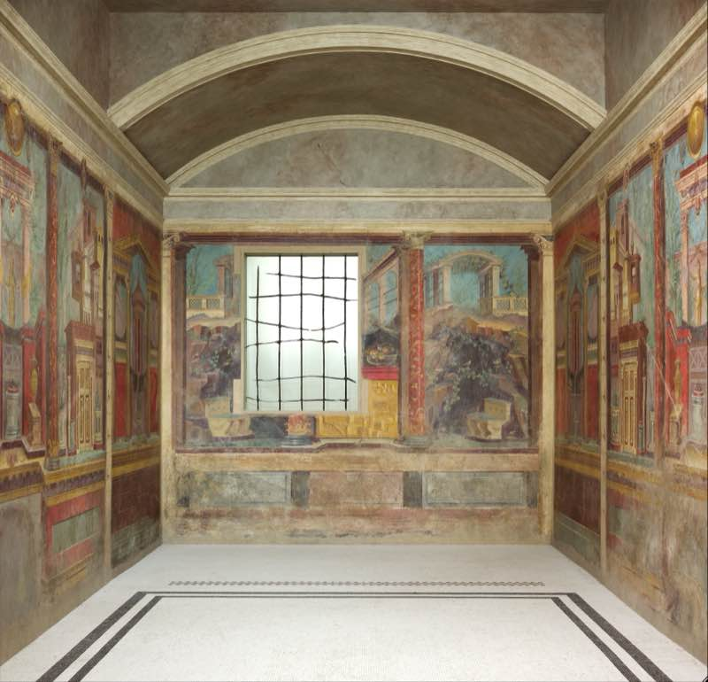
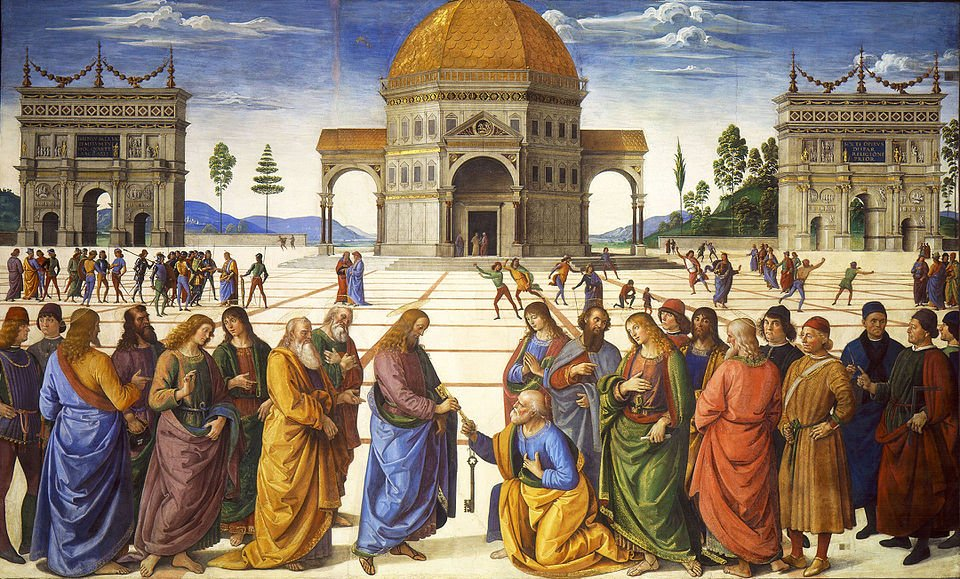
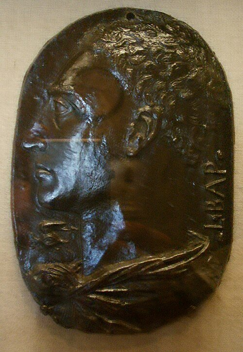
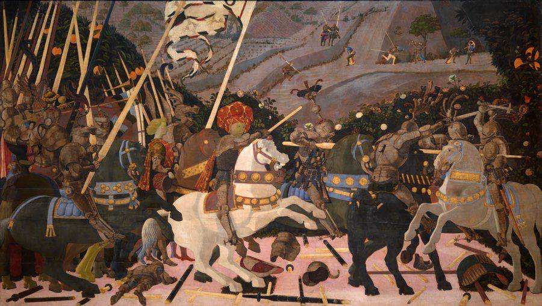
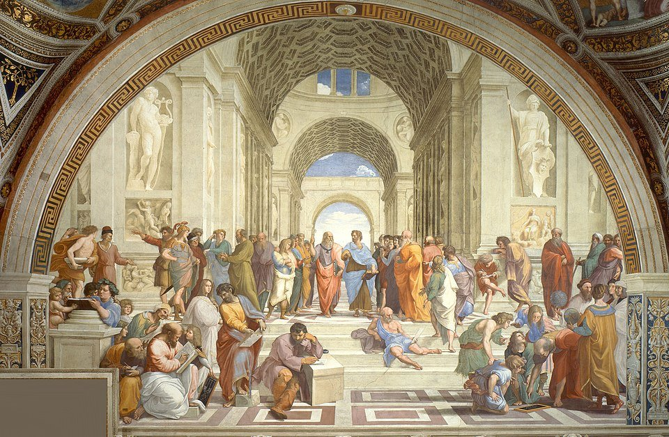
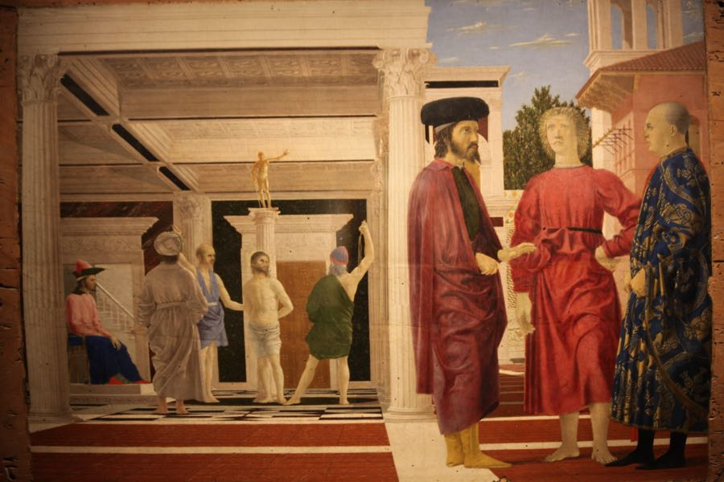

科学と文化
1415年、フィレンツェ。一人の建築家が鏡と小さな板で証明したのは、三次元の世界を二次元の面に移す数学的方法だった。遠近法——それは「見えるとおりに描く」技術ではなく、「見えるとおりに見えるように描く」技術の発明だった。
フィリッポ・ブルネレスキがフィレンツェ大聖堂の入口で線遠近法の公開実験を行う。
同年の世界：英仏百年戦争のアジャンクールの戦いでイングランドのヘンリー5世がフランス軍を破る。コンスタンツ公会議でヤン・フスが異端として火刑に処される。
遠近法の発明から600年。私たちはスマートフォンの写真も、Googleマップの3D表示も、ゲームのオープンワールドも、すべて同じ原理で「奥行き」を見ている。「正しく見える」ことが当たり前すぎて、それが発明だったことを忘れている。
線路に立って、遠くを見たことがある。2本のレールは目の前ではたしかに平行なのに、遠くに行くほど近づいていき、やがて一点に消える。道の並木も、ビルの壁面も、同じように遠くで収束する。あなたはそれを「当たり前」だと思っている。遠くのものが小さく見えるのは、世界がそうなっているからだ、と。
だが、中世ヨーロッパの画家は——1000年にわたって——その「当たり前」を絵にすることができなかった。遠くのものも近くのものも同じ大きさで描かれ、重要な人物は大きく、そうでない人物は小さく描かれた。平行線が一点に収束するという、あなたが毎日見ている光景を、体系的に絵に翻訳する方法を誰も持っていなかった。
遠近法は「発見」ではない。発明だ。数学と幾何学で構築された、現実を平面に射影するための技術体系だ。
自分の手で消失点と地平線を動かし、「正しく見える」空間が数学的にどう構成されているかを体感する。600年前の発明がなぜ今なお写真・映画・ゲームのすべてを支配しているのかを知覚のレベルで理解する。
ある晴れた朝、フィレンツェ大聖堂の正面入口に一人の男が立っていた。フィリッポ・ブルネレスキフィリッポ・ブルネレスキ（1377–1446）
フィレンツェの建築家・金細工師。フィレンツェ大聖堂のドームの設計者。線遠近法を体系化した最初の人物とされる。——建築家であり金細工師であり、のちにフィレンツェ大聖堂のドームを設計することになる人物だ。彼は手に小さな板を持っていた。板の表面にはサン・ジョヴァンニ洗礼堂の絵が描かれ、裏面の中央には小さな穴が開いている。もう片方の手には鏡。

フィリッポ・ブルネレスキ
Filippo Brunelleschi / 1377–1446
フィレンツェの建築家。1401年の洗礼堂扉コンペでギベルティに敗れた後、建築と光学に転向。フィレンツェ大聖堂のドーム（1436年完成）を設計し、1415〜1420年頃に線遠近法の実験を行った。「ルネサンス建築の父」と呼ばれる。
肖像: Sailko, via Wikimedia Commons, CC BY 3.0
ブルネレスキは群衆の一人に板を渡し、裏面から穴を覗くよう指示した。反対の手で板の前に鏡をかざす。すると——穴の向こうに映る鏡には、絵に描かれた洗礼堂が見える。板の上部は銀箔で覆われており、本物の空が鏡に反射して、風に流れる雲が絵の中に入り込んだ。鏡を外すと、穴の向こうには本物の洗礼堂がある。絵と現実の区別がつかなかった。
ブルネレスキの鏡の実験（1415年頃）。観察者は板の裏面から穴を覗き、鏡に映った絵を見る。鏡を外すと同じ位置に本物の建物が現れる。伝記作家マネッティの記述に基づく。
これは手品ではなかった。ブルネレスキが証明したのは、三次元の空間を二次元の平面に、幾何学的に正確に射影する方法だということだ。彼は洗礼堂の大理石の縞模様が遠ざかるにつれて近づいていくことに気づき、そこに数学的法則を見出した。すべての平行線は、画面上の一点——消失点消失点（Vanishing point）
遠近法において、奥行き方向の平行線が画面上で収束する一点。「目の高さ」の地平線上に位置する。——に向かって収束する。
"Since then, I have been brought back here — from the long exile in which we Alberti have grown old — into this our city, adorned above all others."
長い追放生活から——私たちアルベルティ家が老いていったその追放から——この、何よりも美しいわが街へ戻ってきた。
— レオン・バッティスタ・アルベルティ『絵画論（De pictura）』序文（1435年）

マザッチョ『聖三位一体（La Trinità）』（1425–27年）｜フレスコ、667×317cm｜サンタ・マリア・ノヴェッラ聖堂（フィレンツェ）｜線遠近法を用いた最初期の大規模絵画。消失点は十字架の下、鑑賞者の目の高さに設定されている。ブルネレスキが制作に協力した可能性が指摘されている。パブリックドメイン。
ブルネレスキの友人であった画家マザッチョマザッチョ（1401–1428）
本名トンマーゾ・ディ・セル・ジョヴァンニ。初期ルネサンス最大の画家。わずか26歳で没したが、遠近法と明暗法で以後の絵画の方向を決定づけた。は、この原理を絵画に初めて本格的に応用した。サンタ・マリア・ノヴェッラ聖堂の『聖三位一体』は、壁に穴が開いたような錯覚を生む。マザッチョは消失点の位置に実際に釘を打ち、そこから紐を張ってオルソゴナル線オルソゴナル線（Orthogonals）
遠近法における、画面に対して垂直に奥へ向かう仮想的な線。消失点で交わることで奥行きの錯覚が生まれる。を漆喰に刻み込んだ。その痕跡は今もフレスコの下に残っている。
ブルネレスキの発明がどれほど革命的だったかを理解するには、それ以前の1000年間を知る必要がある。古代ローマのポンペイの壁画には、建築物が奥に後退していくような空間描写がすでにある。しかしローマ帝国の崩壊とともに、この技術は失われた。

ボスコレアーレのヴィラのフレスコ（紀元前50–40年頃）｜マリエモント博物館蔵｜古代ローマの「第二様式」の壁画。柱や建築物が画面の奥に後退していく錯覚を、経験的な遠近法で生み出している。体系的な消失点はないが、空間の奥行きを感じさせる表現がすでに存在していた。ブルネレスキの発明から約1500年前の作品。Photo: Sam.Donvil, via Wikimedia Commons, CC BY-SA 4.0
ジョット『キリストへの哀悼』（c.1305）｜フレスコ｜スクロヴェーニ礼拝堂（パドヴァ）｜中世としては革新的な空間表現だが、統一的な消失点はない。パブリックドメイン。

ペルジーノ『鍵の授与』（1481–82）｜フレスコ｜システィーナ礼拝堂｜ブルネレスキの発明から約60年後。床のタイルが完璧なオルソゴナル線を形成する。パブリックドメイン。
遠近法がない絵を見たとき、私たちは何か「違和感」を感じる。子どもの絵に近い感覚だ。家は真正面から描かれ、人は大きさがバラバラで、道は上に行くほど遠いはずなのに狭くならない。あるいはスマートフォンの地図アプリを思い浮かべてもいい。2D表示（真上からの地図）から3D表示に切り替えたときに感じる「奥行きが突然現れる」あの感覚——遠近法の発明とは、まさにその切り替えが初めて起きた瞬間だった。
中世の画家たちが「下手だった」わけではない。彼らには別の関心があった。絵画の目的は現実の模写ではなく、聖書の物語を伝えることだった。重要な人物は大きく描き、背景は金箔で覆い、天上と地上を分けるヒエラルキーを視覚化する。空間の正確さは優先事項ではなかったのだ。
読む前に確認 — よくある誤解
✗ よくある誤解
中世の画家は「遠近法を知らなかった」から平面的に描いた
✓ 実際は
中世絵画の目的は聖書の物語とヒエラルキーの視覚化。体系的な手法は存在しなかったが、「知らなかった」ではなく「必要としなかった」が正確
✗ よくある誤解
遠近法は「自然な見え方」を忠実に再現する方法
✓ 実際は
単一の固定視点からの数学的な射影であり、両眼・眼球運動・周辺視野は再現していない。ある意味で「もっとも説得力のある約束事」
✗ よくある誤解
ブルネレスキが遠近法を「発見」した
✓ 実際は
古代ローマに経験的な遠近法表現はあった。ブルネレスキの功績は「再発見」と「数学的・幾何学的な体系化」にある
ブルネレスキは実演で遠近法を証明したが、その方法を書き残さなかった。体系的な理論を文章にしたのは、人文主義者のレオン・バッティスタ・アルベルティレオン・バッティスタ・アルベルティ（1404–1472）
イタリアの建築家・人文主義者。1435年に『絵画論』を著し、線遠近法を体系的に記述した最初の人物。だった。1435年、アルベルティは『絵画論（De pictura）』を著した。この本は西洋美術史上初の絵画に関する理論的著作だ。

レオン・バッティスタ・アルベルティ
Leon Battista Alberti / 1404–1472
フィレンツェの名門銀行家の家系出身だが、家族は追放されていた。1434年に教皇庁に従ってフィレンツェに戻り、ブルネレスキやマザッチョの革新を目撃。「絵画は開かれた窓である」という比喩は美術理論の基礎となった。
肖像: Sailko, via Wikimedia Commons, CC BY 2.5
アルベルティの核心的な比喩は「絵画は開かれた窓である」というものだ。画家はキャンバスの向こうに広がる世界を、窓枠を通して見ている。この窓は視覚のピラミッド視覚のピラミッド（Visual pyramid）
アルベルティの理論で、観察者の目を頂点とし、見える範囲を底面とするピラミッド状の空間。絵画はこのピラミッドの断面図にあたる。を平面で切断したものであり、その断面が絵画になる。感覚ではなく幾何学で説明できる。
赤い点をドラッグして消失点を動かしてみよう。ボタンで1点・2点・3点透視を切り替えられる。
1点透視＝正面を見る。2点透視＝建物の角を見る。3点透視＝見上げる・見下ろす。現実に近づくほど消失点が増える。

パオロ・ウッチェロ『サン・ロマーノの戦い』（c.1438–40年）｜テンペラ、182×320cm｜ウフィツィ美術館蔵｜地面の折れた槍が消失点に向かって配置されている。ウッチェロは遠近法に取り憑かれ、妻に「この美しい遠近法を放っておけるものか」と言ったとヴァザーリが伝えている。Photo: VivaItalia1974, via Wikimedia Commons, CC BY-SA 3.0
消失点と地平線の関係を知識として理解するのと、自分の手で空間を操作するのは別のことだ。次のシミュレーターには2つのスライダーがある。「消失点の高さ」は、鑑賞者がどこから見ているかを決める。高ければ上空から見下ろし、低ければ地面の高さから見上げる。マザッチョの『聖三位一体』は消失点を鑑賞者の目の高さに置いたからこそ、壁に穴が開いたように見えた。
もう一つの「視距離」は、「広角レンズと望遠レンズの違い」に近い。視距離が小さい（＝広角）と、近くのタイルと遠くのタイルの大きさの差が極端になり、空間が歪んで見える。スマートフォンで顔を近くから撮ると鼻が大きくなるのと同じ原理だ。視距離が大きい（＝望遠）と、手前と奥の大きさの差が縮まり、空間が圧縮されて見える。
スライダーを動かしながら、「どの設定がもっとも自然に見えるか」を探してみてほしい。そこに唯一の正解はない。画家はこれを意識的に選んでいる。遠近法は選択なのだ。
消失点の高さ: 50%
視距離（広角↔望遠）: 50%
アルベルティの『絵画論』（1435年）に基づく概念的シミュレーション。実際の絵画では画家が自由に構図を選ぶため、数学的な正確さと芸術的な判断は常に緊張関係にある。
"Know that a painted thing can never appear truthful where there is not a definite distance for seeing it."
描かれたものは、それを見るための一定の距離がなければ、真実らしく見えることは決してない。
— レオン・バッティスタ・アルベルティ『絵画論（De pictura）』（1435年）
なぜ紙の上に描かれた線を見て「奥行きがある」と感じるのか。答えはシンプルだ——脳が毎日やっている作業と同じパターンを絵の中に見つけるから。線路のレールが遠くで近づいていく。廊下の壁が奥に向かって狭まる。脳はこうした視覚的なパターンを手がかりに「あれは遠くにある」と判断している。遠近法はその手がかりを紙の上に再現する。脳は紙を見ているのに、勝手に「ここには奥行きがある」と読んでしまう。
こうした手がかりは単眼手がかり単眼手がかり（Monocular cues）
片目だけで奥行きを知覚するための手がかり。線の収束、物体の重なり、大気遠近法（遠くが霞む）、テクスチャの勾配などがある。と呼ばれる。「単眼」というのは、片目だけでも奥行きを感じ取れるという意味だ。遠近法が「片目の凍った世界」なのに説得力を持つのは、まさにこの片目でも機能する手がかりを利用しているからだ。しかし「正しく見える」は「正しい」とは限らない。
遠近法が「効く」3つの理由
平行な線が視野の中で交差していくとき、脳はそれを「遠ざかっている」と解釈する。線路、廊下、並木道——日常的に経験するパターンと同じだ。遠近法はこの解釈を人工的に再現する。
床のタイルを見てみよう。足元では大きく見え、遠くでは小さくなる。心理学者ギブソンはこれをテクスチャの勾配と呼んだ。遠近法の格子状の床は、まさにこの勾配を人工的に作っている。
人間は2つの目で見ている。目は常に動く。周辺視野はぼやけている。遠近法はそのすべてを無視する。単一の、動かない、片目の視点からの世界。だから20世紀にキュビズムは遠近法を破壊した。遠近法の「正しさ」は絶対的なものではなく、ある前提のもとでの約束事にすぎない。
遠近法は ①線の収束 ②テクスチャの勾配 という脳の奥行き推定メカニズムに合致するため「正しく見える」。しかし ③それは固定視点の数学的射影であり、人間の視覚そのものの再現ではない。
赤丸 = 遠近法の系譜に直接関わる出来事。白丸 = 関連する文化の動き。
紀元前1世紀
ポンペイの壁画に経験的な空間表現
古代ローマの画家たちは「消失軸」を用いて建築物の奥行きを描いた。体系的な理論はなかったが、説得力のある空間描写が存在した。
5–14世紀
中世ヨーロッパの「空白」
絵画の目的が聖書の物語伝達に移り、空間の正確さへの関心が後退。金地背景が標準となった。
1305年頃
ジョットのスクロヴェーニ礼拝堂フレスコ
人物に重量感と感情を与え、直感的な奥行きを持たせた。ルネサンスへの道を開いた先駆者。
1415年頃
ブルネレスキの遠近法実験
フィレンツェ大聖堂の入口で鏡と板を使い、線遠近法の正確さを公開実証。
1425–27年
マザッチョ『聖三位一体』
線遠近法を用いた最初期の大規模絵画。釘と紐で正確なオルソゴナル線を漆喰に刻んだ。
1435年
アルベルティ『絵画論』
遠近法を幾何学的に体系化した最初の著作。「絵画は開かれた窓である」。
c.1438–60年
ウッチェロの遠近法への執着
『サン・ロマーノの戦い』で折れた槍を消失点に向けて配置。遠近法に「取り憑かれた」画家。
1509–11年
ラファエロ『アテネの学堂』
遠近法の頂点。消失点をプラトンとアリストテレスの間に設定し、哲学的意味を構図に組み込んだ。
1907年
ピカソ『アヴィニョンの娘たち』
単一視点を拒否し、複数の視点を同時に描くキュビズムの出発点。遠近法が支配した500年間への挑戦。

ラファエロ『アテネの学堂（The School of Athens）』（1509–11年）｜フレスコ、500×770cm｜ヴァティカン宮殿｜遠近法の頂点。消失点はプラトンとアリストテレスの中間に設定されている。ブルネレスキの実験から約100年で、遠近法は成熟の極みに達した。パブリックドメイン。
遠近法は確かに脳の奥行き推定メカニズムと合致するため説得力がある。だが、それは人間の視覚を再現しているわけではない。私たちは2つの目で見ている。目は絶えず動いている。遠近法はそのすべてを無視し、単一の、動かない、片目の視点からの世界を数学的に構成する。
美術史家のジョン・バーガーは、遠近法にはイデオロギーが埋め込まれていると指摘した。遠近法には必ず「どこから見るか」が設定される。一人の人間が、自分の目の高さから、ある一瞬に見えるものだけを描く——それが遠近法の前提だ。中世の絵画がそうではなかったことを思い出してほしい。中世の画家は、重要なものを大きく、そうでないものを小さく描いた。視点は「個人」ではなく「神」のものだった。遠近法が「一人の個人が、自分の位置から世界を見る」ことを前提にするのは、ルネサンスの「人間中心主義」と同じ構造だ。描き方が変わったのではない。世界の見方が変わったのだ。

ピエロ・デッラ・フランチェスカ『キリストの鞭打ち』（c.1468–70年）｜テンペラ、59×81.5cm｜マルケ国立美術館（ウルビーノ）蔵｜左奥でキリストが鞭打たれ、右手前で3人が無関心に立つ。2つの空間を遠近法で統合した不穏な構図。Photo: Mongolo1984, via Wikimedia Commons, CC BY-SA 4.0
それでも遠近法は世界を変えた。写真のレンズは遠近法の原理で設計されている。映画のフレームは消失点を意識して構成される。ゲームの3Dエンジンは毎秒60回、遠近法の数学を計算している。600年前の一人の建築家が証明した「平面に奥行きを映す方法」は、今も——気づかないほど静かに——私たちの視覚世界を支配し続けている。
文化の中に現れる
映画『市民ケーン』（1941年）
パンフォーカスと深い奥行き構図で、遠近法的な空間表現を映画言語として確立。カメラアングルと消失点の操作で権力関係を視覚化した。
M・C・エッシャーの版画（1930–60年代）
遠近法の法則を意図的に破壊し「ありえない空間」を構成した。単一の消失点・一貫した重力を崩すことで、視覚の限界を暴いた。
3Dゲームエンジンとリアルタイムレンダリング
ゲームの透視投影（perspective projection）はブルネレスキの原理そのもの。600年前の数学がGPUの中で毎秒数十億回実行されている。
遠近法の理論的基礎を据えた美術史上最初の絵画理論書。「開かれた窓」の比喩は今なお美術教育で引用される。Penguin Classicsなどから入手しやすい英訳がある。
遠近法を「象徴形式」として論じた古典。遠近法は光学的事実ではなく時代の世界観の表現だと主張する。「遠近法は客観的か」を考える上で避けて通れない。
Brunelleschi's Dome: How a Renaissance Genius Reinvented Architecture
ブルネレスキのドーム建設を中心に据えた一般向け科学史。遠近法の実験にも触れている。ルネサンス・フィレンツェの空気を感じるのに最適。
The Ecological Approach to Visual Perception
テクスチャの勾配やアフォーダンスの概念を提唱した名著。遠近法が「なぜ効くのか」の知覚的基盤を理解するために読む価値がある。